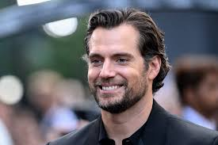

Henry Cavill
Article
Henry William Dalgliesh Cavill (/ˈkævəl/ KAV-əl; born 5 May 1983) is a British actor. He is known for his portrayal of Charles Brandon in Showtime's The Tudors (2007–2010), Superman in the DC Extended Universe (2013–2023), Geralt of Rivia in the Netflix fantasy series The Witcher (2019–2023) and Sherlock Holmes in the Netflix film Enola Holmes (2020) and its 2022 sequel. Cavill began his career with roles in the film adaptations The Count of Monte Cristo (2002) and I Capture the Castle (2003). He played supporting roles in several television series, including BBC's The Inspector Lynley Mysteries (2002) and ITV's Midsomer Murders (2003), and later appeared in other films, such as Tristan & Isolde (2006), Stardust (2007) and Immortals (2011). Following his international breakthrough as Superman, he starred in the spy films The Man from U.N.C.L.E. (2015), Mission: Impossible – Fallout (2018), Argylle (2024) and The Ministry of Ungentlemanly Warfare (2024).
